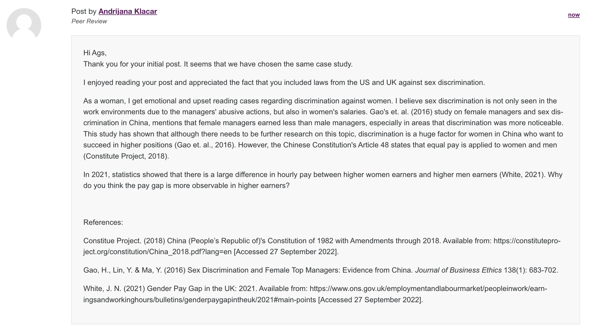

Research Methods and Professional Practice

This module provides foundation on research methods and introduces research techniques, which will then be applied on upcoming projects. It will also provide insight on professional, legal, ethical, and cultural issues affecting computing professionals and projects nowadays.
Unit 1:
Collaborative Learning Discussion 1: Codes of Ethics and Professional Conduct

Reasoning Quiz
This quiz was based on inductive and deductive logic. We were asked to choose whether each statement was deductive or inductive. I attempted this quiz twice. The first attempt I got 4/6 questions correct. I was a bit confused as to why the other two were wrong since I do not think that all cats have a keen smell, some might not be able to smell at all. Also, I did not think that all football players weighted more than 170 pounds. I assumed that since the statements had the keyword all, I should have assumed that those statements were true.
Reflections
This unit focused on the ethical aspect of cybersecurity and responsible research. I believe ethics, escpecially in work environments, should be in any organisation's priority list. Toxic work environments are considered to negatively affect one's productivity, while this decrease in productivity could lead to job burnouts (Anjum et. al., 2018). As someone who has heard stories of friends and family and toxic environments, I try keeping in mind that my mental health and happiness are more important than salaries and money. The collaborative discussion was a great reminder of this morale. Conducting research is never easy, at least for me. I believe there are a lot of loopholes to watch out for, such as irrelevant, outdated, untrusted and non-reliable sources. Although university's guidelines are straight-forward when it comes to referencing, I found that Nulli's et. al. (2018) article included a very clear, informative, and helpful table, which I will address to when researching. References: Anjum, A., Ming, X., Siddiqi, A. F. & Rasool, S. F. (2018) An Empirical Study Analyzing Job Productivity in Toxic Workplace Environments. International Journal of Environmental Research and Public Health 15(5): 1-15. Nulli, M., Stahl, B., Ten Holter, C. & de Heaver, M. (2018) Responsible research in IT. ITNOW 60(2): 14-15.
Unit 2:
Collaborative Learning Discussion 1: Peer Responses
My response to Angelides' (2022) Initial Post:  My response to Lin's (2022) Initial Post:References: Angelides, A. (2022) Initial Post. Available from: https://www.my-course.co.uk/mod/hsuforum/discuss.php?d=325555 [Accessed 27 September 2022]. Lin, H. W. (2022) Initial Post. Available from: https://www.my-course.co.uk/mod/hsuforum/discuss.php?d=325959 [Accessed 27 September 2022].
Literature Review and Research Proposal Outline

Reflections
I enjoy researching and reading about topics I find intriguing, but this unit was a bit confusing and a bit stressful. Although we had the freedom to choose a literature review topic, I did not know how to write a literature review or where to even start. However, the lecturecast, literature review guide questions provided by Healy et. al. (2020), and some further research I have done gave me an insight on how it should look like. References: Healey, M., Matthews, K. & Cook-Sather, A. (2020) Writing about learning and teaching in higher education: Creating and contributing to scholarly conversations across a range of genres. Center for Engaged Learning Open-Access Books, Elon University.
Unit 3:
Collaborative Learning Discussion 1: Summary Post
Below is a screenshot of my summary post:
e-Portfolio Activity: Research Proposal Review
TBC
Unit 4:
TBC
Unit 5:
TBC
Unit 6:
TBC
Unit 7:
TBC
Unit 8:
TBC
Unit 9:
TBC
Unit 10:
TBC
Unit 11:
TBC
Unit 12: